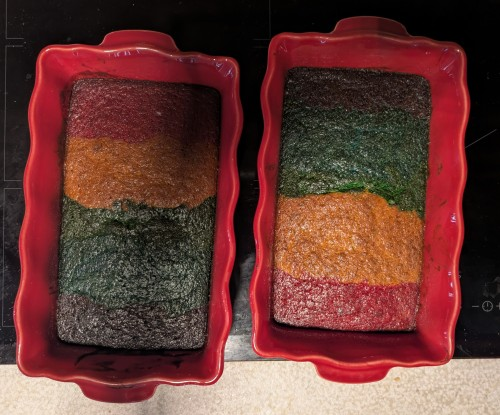

Mavričen bananin kruh

Čas priprave: 15 min priprave + 45–50 min peke - Število porcij: 8 kosov
Sestavine
- 3 banane
- 2 jajci
- 125 g masla
- 125 g sladkorja
- 1 vanilijev sladkor
- 170 g moke
- 1 pecilni prašek
- ščepec cimeta
- živilske barve (po želji, za mavrični učinek)
Postopek
- Pečico segrejte na 180 °C. Model za kruh namastite ali obložite s peki papirjem.
- Banane pretlačite z vilicami v gladko kašo.
- V večji skledi zmešajte maslo (mehko, sobne temperature), sladkor in vanilijev sladkor, nato vmešajte jajci.
- Dodajte pretlačene banane in dobro premešajte.
- Moko presejte skupaj s pecilnim praškom in cimetom ter jo vmešajte v testo, dokler ni gladko.
- Za mavrični učinek testo razdelite v več skodelic in vsako obarvajte z drugo živilsko barvo. Barve nato izmenično vlivajte v model.
- Pecite 45–50 minut pri 180 °C. Kruh je pečen, ko zobotrebec, zapičen v sredino, ostane suh.
- Pustite, da se kruh ohladi v modelu nekaj minut, nato ga obrnite na rešetko in narežite.